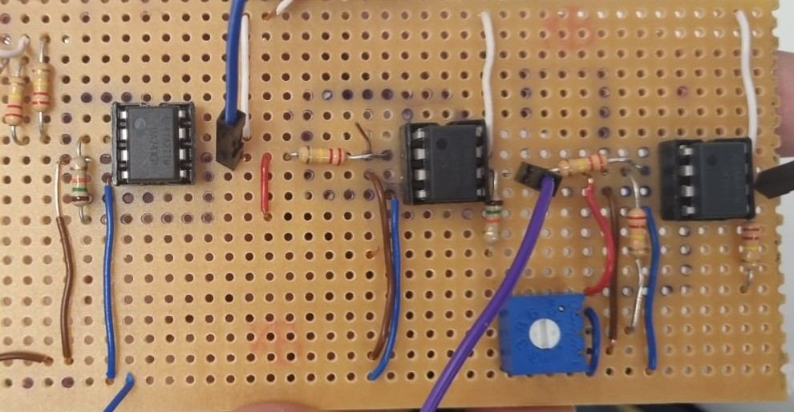

Control Engineering — The Kitticopter
A control engineering project focused on designing and building an analogue controller capable of helping a simulated flying system track a position input while meeting specific performance and robustness requirements.
What was the project?
The project was themed around Orvillecopter and required the design of a controller for a virtual flying system. The objective was to make the system track a desired position while maintaining acceptable steady-state error, overshoot and robustness.
The controller had to achieve a steady-state error below 8%, overshoot below 30%, and remain robust to ±10% uncertainty in both the system's aerodynamic constant and the physical components used to construct the controller. The design also had to operate within a 10V supply limit.
What I worked on
I began by designing a proportional controller and analysing how it affected the system response. From there, I developed the design into a lead compensator to achieve the required performance specifications.
I then translated the theoretical controller design into a physical analogue circuit. The circuit shown above is the hand-built lead compensator used to implement the controller in hardware.
Engineering decisions
A key part of the design process was balancing system performance with practical hardware limitations. The controller needed to meet the required error and overshoot specifications while remaining stable and sufficiently robust to variations in both the model and physical components.
Moving from the theoretical control design to an analogue circuit also required considering real component values, supply limitations and the difference between an ideal mathematical model and a physical implementation.
Skills demonstrated
Project evidence
The full project report documents the controller design, analysis, implementation and testing carried out during the project.
View Project Report →What I took from the project
This project helped me connect control theory with physical engineering. Instead of working only with equations and simulated responses, I had to translate the controller into a real analogue circuit and consider how practical component limitations could affect the system.
It strengthened my understanding of feedback, controller design and system performance while also showing me the importance of considering robustness when designing a real engineering system.